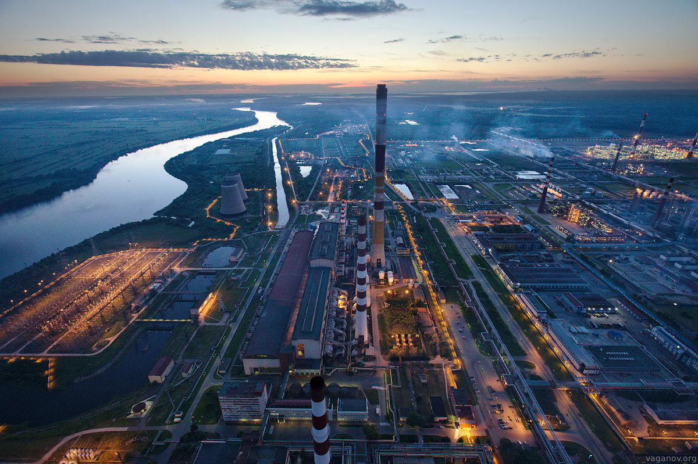

Санкт-Петербург — уникальный мегаполис, гармонично сочетающий в себе статус главной культурной столицы России и мощного экономического центра страны.Историческое наследие города, насчитывающее более 200 музеев, включая Эрмитаж и Русский музей, а также 80 театров во главе с легендарной Мариинской сценой, формирует его неповторимый облик музея под открытым небом. Этот колоссальный культурный капитал ежегодно привлекает более 12 миллионов туристов, превращая индустрию гостеприимства и сферу услуг в один из ключевых драйверов городской экономики.При этом современный Петербург прочно удерживает 4-е место в России по объемам производства, опираясь на диверсифицированный экономический комплекс с валовым региональным продуктом свыше 13 трлн рублей и уверенным ростом промышленного индекса (103,4%). Индустриальное сердце Балтики держится на мощном судостроении, выпускающем арктические ледоколы, тяжелом машиностроении и передовом фармацевтическом кластере. Выгодное географическое положение делает город крупнейшим транспортно-логистическим и торговым узлом, где оборот оптовой торговли измеряется триллионами рублей, а высокий научно-образовательный потенциал местных вузов превратил Петербург в один из главных ИТ-хабов Восточной Европы.Несмотря на инфраструктурные вызовы и необходимость масштабных вложений в мегапроекты, такие как Высокоскоростная железнодорожная магистраль (ВСМ), город демонстрирует финансовую устойчивость: доходы бюджета превысили исторический рубеж в 1,41 трлн рублей, а средняя заработная плата горожан составляет около 128,2 тыс. рублей, что подтверждает статус Санкт-Петербурга как развитого, комфортного для жизни и инвестиционно привлекательного глобального центра.